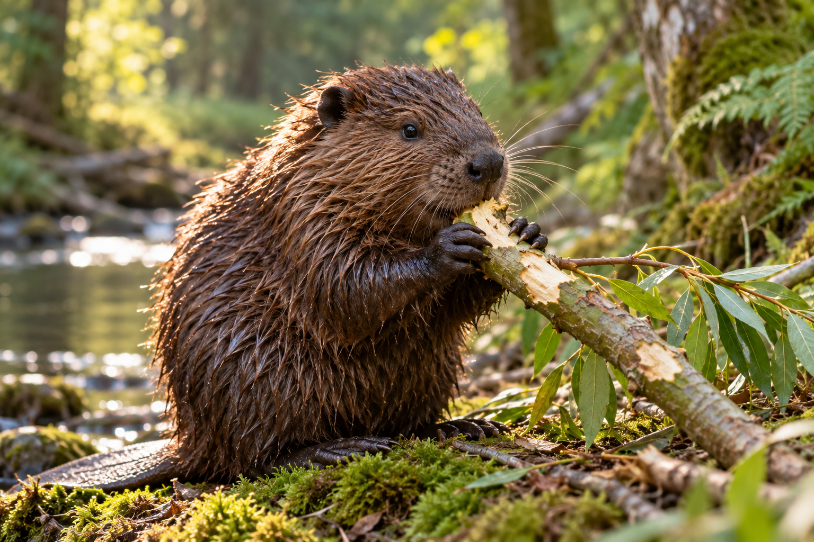

Бобр — не хомяк: базовые принципы

Бобр — животное с характером и инженерным складом ума. Он не станет возводить плотину там, где ему не нравится течение, и не потащит ветку, если её, в принципе, можно не тащить. Именно поэтому дрессировка начинается не с команды «сидеть», а с честного договора о сотрудничестве.
Наш курс рассчитан на — пору, когда у бобров особенно много энергии, а у инструкторов особенно много терпения.
В первую очередь мы тренируем:
- реакцию на имя, свисток и характерное пощёлкивание языком;
- перенос веток по заданному маршруту без остановок на перекус;
- строительство мини-плотины в специально подготовленной песочнице;
- спокойное отношение к фотоаппарату, зевакам и экскурсиям школьников.
«Бобр не выполняет команду — он соглашается с предложением. Разница принципиальная, и осознать её — половина курса». Игорь Хвостов, старший инструктор академии